Manual del administrador
Introducción
APEX es un sistema web para llevar el control de préstamos y cobros: registra a los clientes, los créditos que se les entregan, su plan de cuotas, cada pago recibido y el dinero que maneja cada cobrador.
¿Qué resuelve APEX?
Control de la cartera
Sabe en todo momento cuánto dinero hay en la calle, cuánto está vencido y qué cobrador lo maneja.
Control del cobrador
Cuántos clientes tiene cada uno, cuánto recaudó, cuánto efectivo tiene en su poder y si entregó completa la plata.
Orden en los cobros
Plan de cuotas automático, ruta diaria, recibos, promesas de pago y control de mora.
Información para decidir
Calificación de cada cliente, rentabilidad mensual y reportes profesionales en Excel.
Trabajo sin internet
Las pantallas se pueden consultar sin señal y el cobrador sigue cobrando en la ruta: todo se envía solo al volver la conexión.
Roles de usuario
El sistema tiene dos tipos de usuario. Cada persona debe tener su propio usuario: nunca compartas usuarios ni contraseñas.
| Rol | Qué puede hacer |
|---|---|
| Administrador | Todo el sistema: clientes, créditos, renovaciones, pagos y anulaciones, cobradores, cierres de caja, reportes, auditoría, respaldos, usuarios y configuración. |
| Cobrador | Solo su propia cartera: ve su ruta del día, sus clientes y créditos, registra pagos, gestiones de cobro y gastos de ruta, y registra clientes nuevos (quedan a su nombre). No crea créditos, no anula pagos, no ve reportes ni la información de otros cobradores. |
En el capítulo 17 encontrarás la tabla completa de permisos por rol.
Requisitos para usar el sistema
- Un computador, tableta o celular con un navegador actualizado (Chrome, Edge, Firefox o Safari).
- Conexión a la red donde está instalado el sistema (o a internet, si está publicado). Sin conexión se pueden consultar las pantallas ya abiertas y cobrar desde la ruta (capítulo 8).
- La dirección del sistema, tu usuario y tu contraseña, entregados por el administrador.
Conceptos básicos
| Cliente | Persona a la que se le presta dinero. Se identifica por su cédula y siempre tiene un cobrador responsable. |
| Crédito | Préstamo entregado a un cliente, con un monto, un interés y un plan de cuotas. Tiene un código único (CR-00001). |
| Cuota | Cada uno de los pagos programados del crédito, con su fecha de vencimiento. |
| Pago | Dinero recibido del cliente. Genera un recibo con código único (RC-000001). |
| Cartera | Dinero pendiente por cobrar: la suma de los saldos de los créditos activos. |
| Mora | Cuotas que ya vencieron y no se han pagado. |
| Efectivo en mano | Dinero en efectivo que el cobrador recibió y aún no ha entregado en un cierre de caja. |
Primeros pasos
Ingresar al sistema
- Abre el navegador y escribe la dirección del sistema (por ejemplo
http://localhost/ApexCobroso la que te indiquen). - Escribe tu usuario (o tu correo) y tu contraseña. Puedes tocar el ícono del ojo para ver lo que escribes.
- Presiona Entrar →.
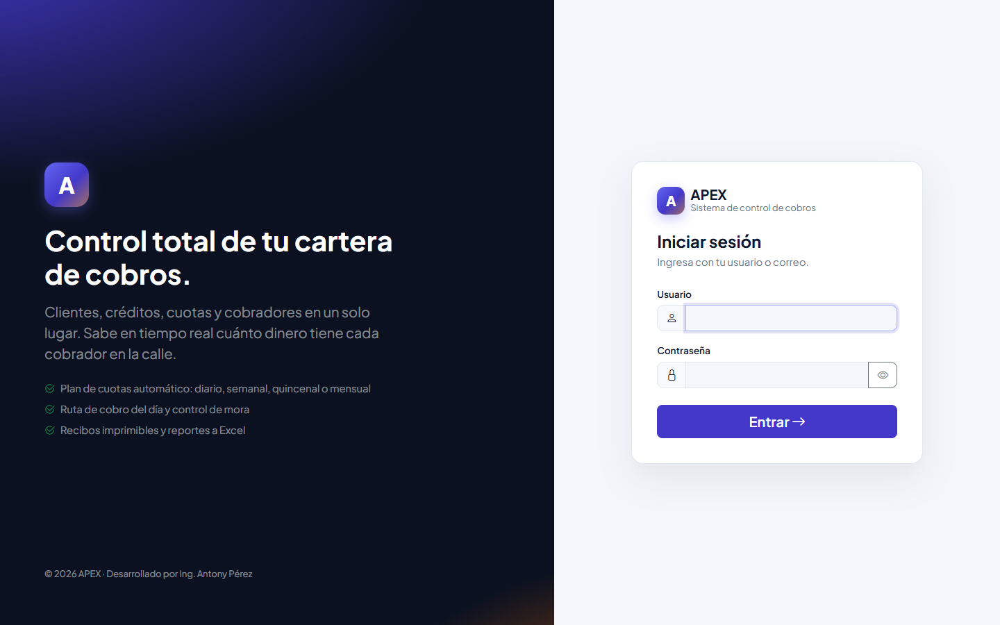
Si el usuario o la contraseña no son correctos aparece este aviso. Por seguridad el sistema no dice cuál de los dos está mal.
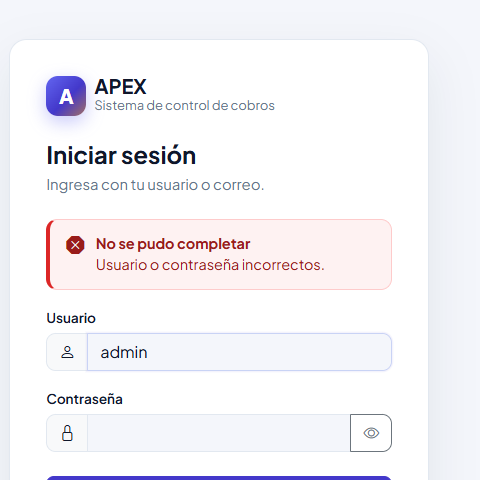
Cambio de contraseña obligatorio
La primera vez que ingresas, o cuando el administrador te asigna una contraseña nueva, el sistema te lleva a y no te deja usar ninguna otra pantalla hasta que crees una contraseña personal.
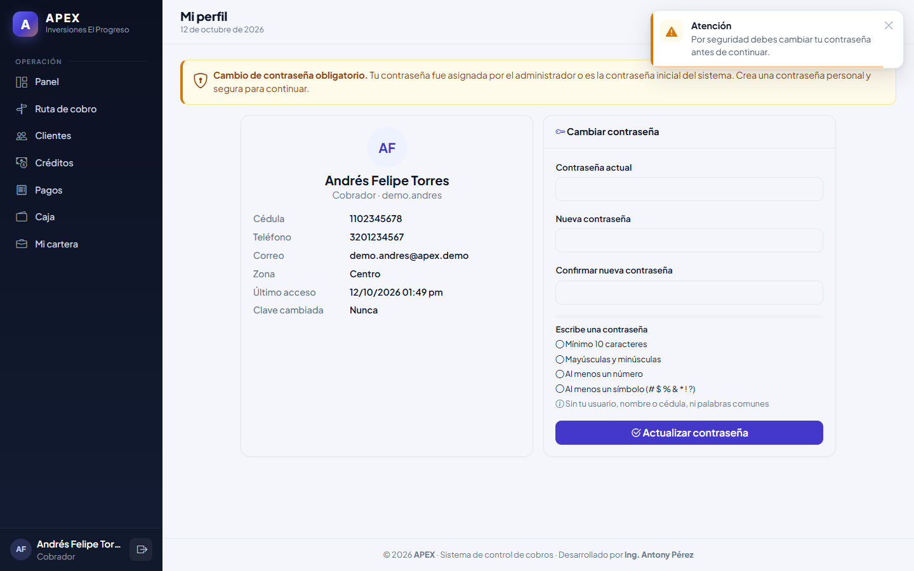
- Escribe la contraseña actual (la que te entregaron).
- Escribe la nueva contraseña. El medidor muestra en verde cada requisito que se cumple.
- Repítela en Confirmar nueva contraseña y presiona Actualizar contraseña.
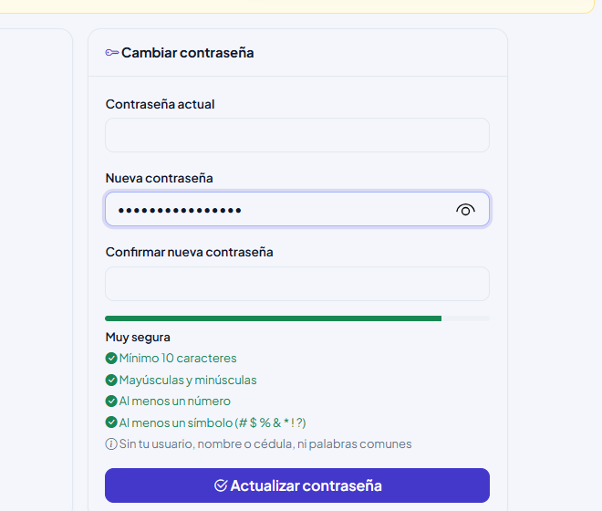
Requisitos de una contraseña segura
- Mínimo 10 caracteres.
- Combinar mayúsculas y minúsculas, al menos un número y un símbolo (# $ % & * ! ? . -).
- No puede contener tu usuario, nombre, cédula o correo, ni palabras muy comunes (por ejemplo "password", "colombia", "123456").
- No puede repetir el mismo carácter 4 veces seguidas, y debe ser diferente a la anterior.
Mango.Rojo#Lunes27. Es larga, fácil de recordar y difícil de adivinar.La pantalla principal
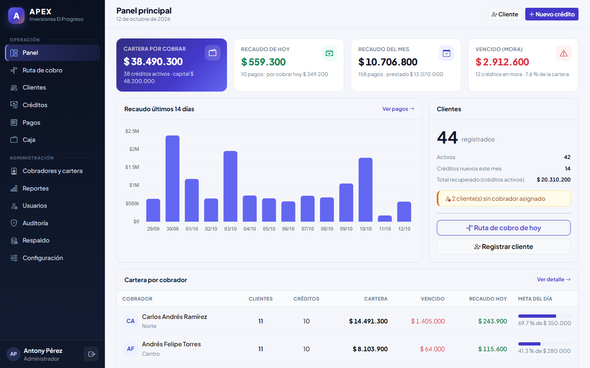
Menú lateral
Agrupa los módulos en Operación (uso diario) y Administración. La opción en la que estás aparece resaltada. Abajo se muestra tu nombre, tu rol y el botón para cerrar sesión.
En el celular el menú se oculta: tócalo con el botón ☰ de la esquina superior izquierda.
La opción , al final del menú, abre o descarga estos manuales en PDF. Cada usuario ve los que corresponden a su rol.
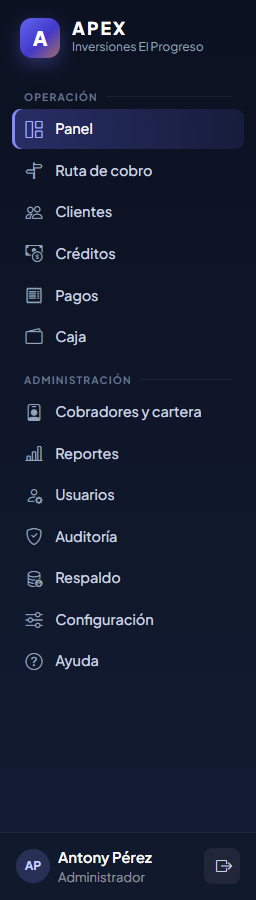
Barra superior
Muestra el nombre de la pantalla y la fecha de hoy, y dos accesos rápidos: Cliente para registrar un cliente y Nuevo crédito.
Notificaciones
Cada vez que realizas una acción, el sistema te confirma el resultado con una notificación en la esquina superior derecha (en el celular, abajo). Se cierran solas; si pasas el mouse por encima se detienen para que alcances a leerlas.
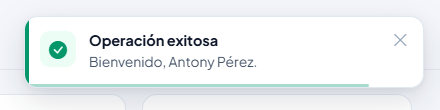
| Color | Significado |
|---|---|
| Verde · Operación exitosa | La acción se guardó correctamente. |
| Azul · Información | Dato importante (por ejemplo, un sobrante en el cierre de caja). |
| Naranja · Atención | No se realizó la acción por una regla del negocio, o hay algo que revisar. |
| Rojo · No se pudo completar | Faltan datos o hay un error. Lee el mensaje: siempre explica qué corregir. |
Confirmaciones
Las acciones delicadas (eliminar, anular) piden confirmación en una ventana que explica qué va a pasar. Algunas, como anular un pago, exigen escribir el motivo, que queda guardado en la auditoría.
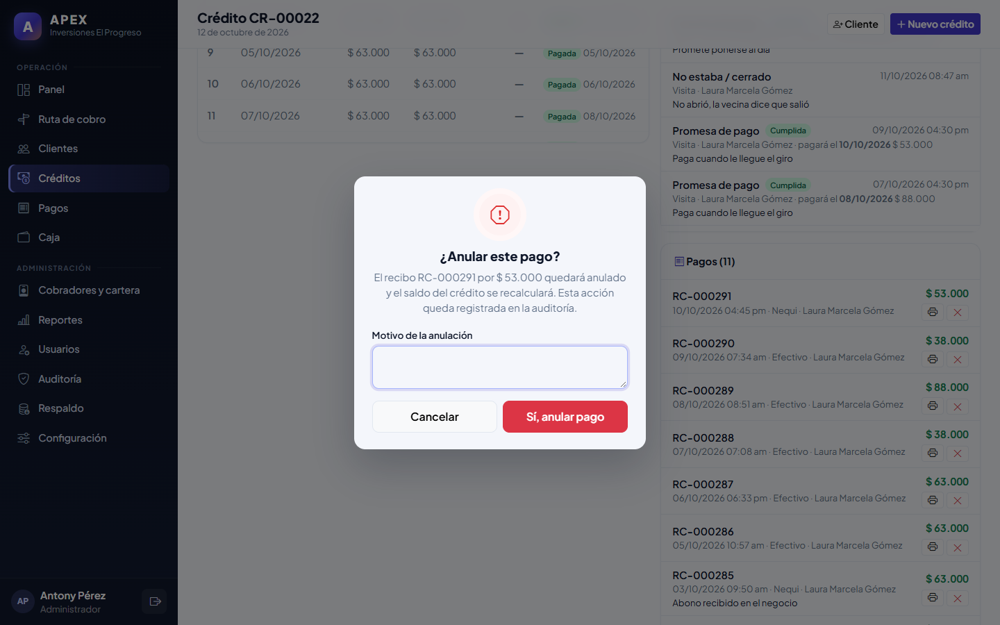
Cerrar sesión
Usa el botón ⇥ junto a tu nombre, en la parte inferior del menú. Por seguridad la sesión también se cierra sola después de 30 minutos sin actividad y, como máximo, a las 12 horas. Cierra siempre la sesión si usas un equipo compartido.
Al cerrar sesión se borran del equipo las copias de pantallas guardadas para trabajar sin internet (tienen datos de clientes). Lo que el cobrador tenga pendiente por enviar no se borra. Cerrar sesión necesita internet: sin señal el botón avisa que no puede hacerlo.
Configuración inicial
Antes de empezar a operar, completa estos pasos una sola vez.
- Cambiar la contraseña inicial del administrador (el sistema lo exige).
- Registrar los datos de la empresa en .
- Revisar los valores por defecto de los créditos (interés, cuotas y frecuencia).
- Crear un usuario para cada cobrador en .
- Registrar los clientes y asignarlos a sus cobradores.
- Programar el respaldo diario (ver Respaldo de datos).
Datos de la empresa
Ingresa a . El nombre, NIT, teléfono y dirección aparecen en los recibos, el estado de cuenta, el paz y salvo y todos los reportes de Excel.
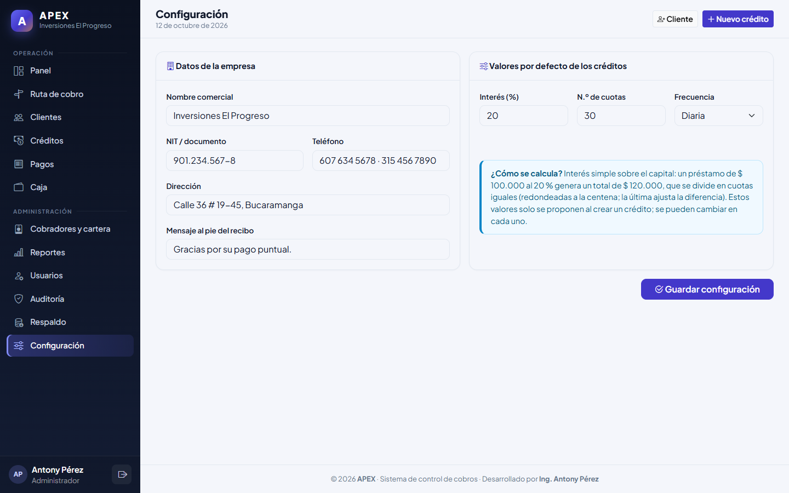
| Campo | Uso |
|---|---|
| Nombre comercial | Encabezado del menú, recibos, documentos y reportes. |
| NIT / documento | Recibos, estado de cuenta y paz y salvo. |
| Teléfono y dirección | Recibos y documentos. |
| Mensaje al pie del recibo | Texto final del recibo (por ejemplo "Gracias por su pago puntual"). |
| Interés, N.º de cuotas y frecuencia | Valores que se proponen al crear un crédito. Se pueden cambiar en cada crédito. |
Usuarios y cobradores
En se administran las personas que acceden al sistema.
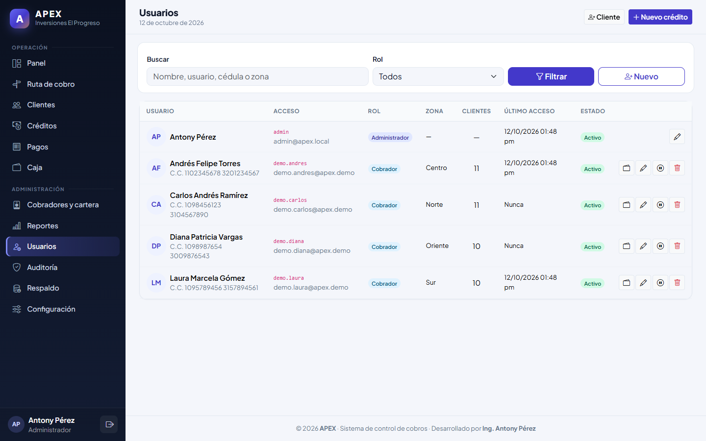
Crear un cobrador
- Entra a y presiona Nuevo (o, desde , Nuevo cobrador).
- Selecciona el rol Cobrador.
- Completa nombre, cédula y teléfono (obligatorios para cobradores), correo, zona o ruta y, si quieres, una meta de recaudo diario.
- Define el usuario con el que ingresará (letras, números, punto o guion) y una contraseña temporal que cumpla la política.
- Presiona Guardar. Entrega al cobrador su usuario y contraseña temporal: deberá cambiarla en su primer ingreso.
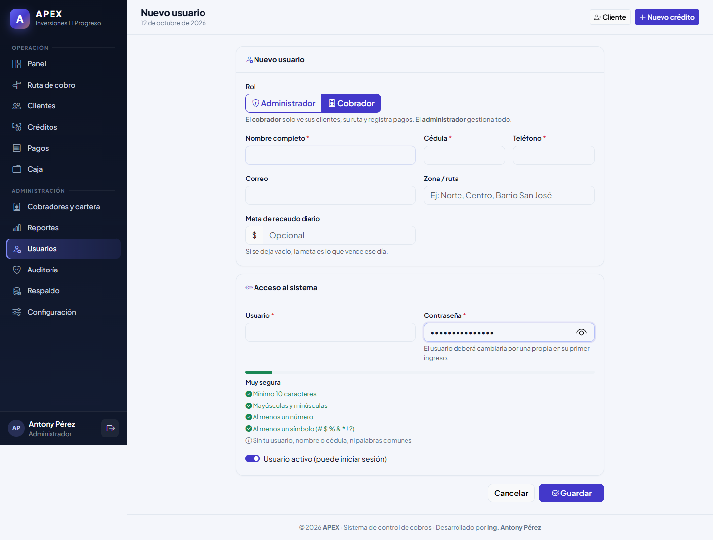
Editar un usuario y restablecer su contraseña
Presiona el lápiz ✎ del usuario. Si escribes una contraseña nueva, el usuario deberá cambiarla en su siguiente ingreso y todas sus sesiones abiertas se cierran de inmediato. Lo mismo ocurre si cambias su rol o lo desactivas.
Desactivar o eliminar
- Desactivar (botón ⏸): el usuario ya no puede ingresar y su sesión abierta se cierra al instante. Se conserva su historial. Es la opción recomendada cuando un cobrador se retira.
- Eliminar (botón 🗑): solo es posible si el usuario no tiene clientes asignados ni pagos registrados.
Clientes
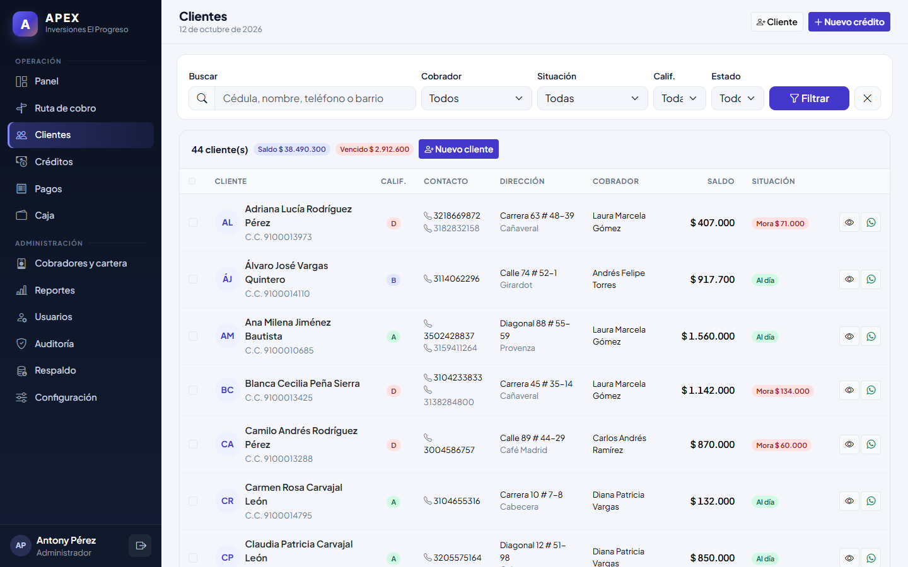
Buscar y filtrar
La barra de filtros permite buscar por cédula, nombre, teléfono o barrio y filtrar por cobrador (incluida la opción Sin asignar), situación (en mora, al día, sin crédito activo), calificación (A, B, C, D, N) y estado.
Registrar un cliente
- Presiona Cliente en la barra superior o Nuevo cliente en el listado.
- Completa los datos personales: cédula, nombres, apellidos y teléfono principal son obligatorios; el correo, el segundo teléfono, la fecha de nacimiento y la ocupación son opcionales.
- Completa la ubicación: dirección (obligatoria), barrio, ciudad y los datos del negocio o trabajo.
- Registra una referencia personal (nombre, teléfono y parentesco).
- En Asignación elige el cobrador responsable y el estado.
- Agrega observaciones útiles para el cobro (horario, puntos de referencia) y presiona Registrar cliente.
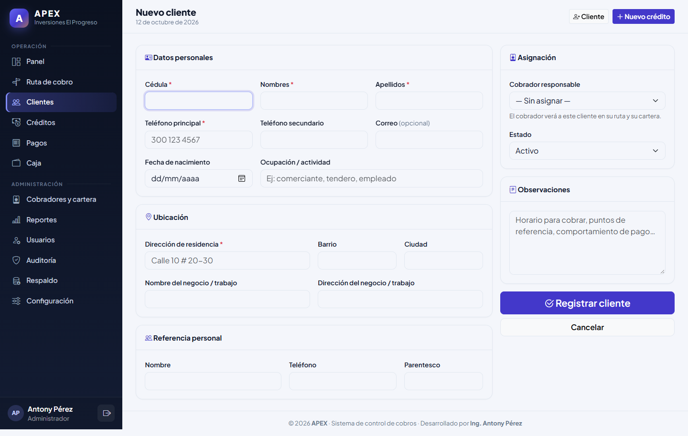
Estados del cliente
| Activo | Cliente normal: se le pueden otorgar créditos. |
| Inactivo | Ya no trabaja con la empresa. No se le pueden crear créditos; se conserva su historial. |
| Bloqueado | No se le debe volver a prestar (por ejemplo, por incumplimiento). El sistema impide crearle créditos. |
Ficha del cliente
Al abrir un cliente verás su resumen, su calificación de pago, datos de contacto, referencia, cobrador asignado con el historial de cambios y todos sus créditos con su avance.
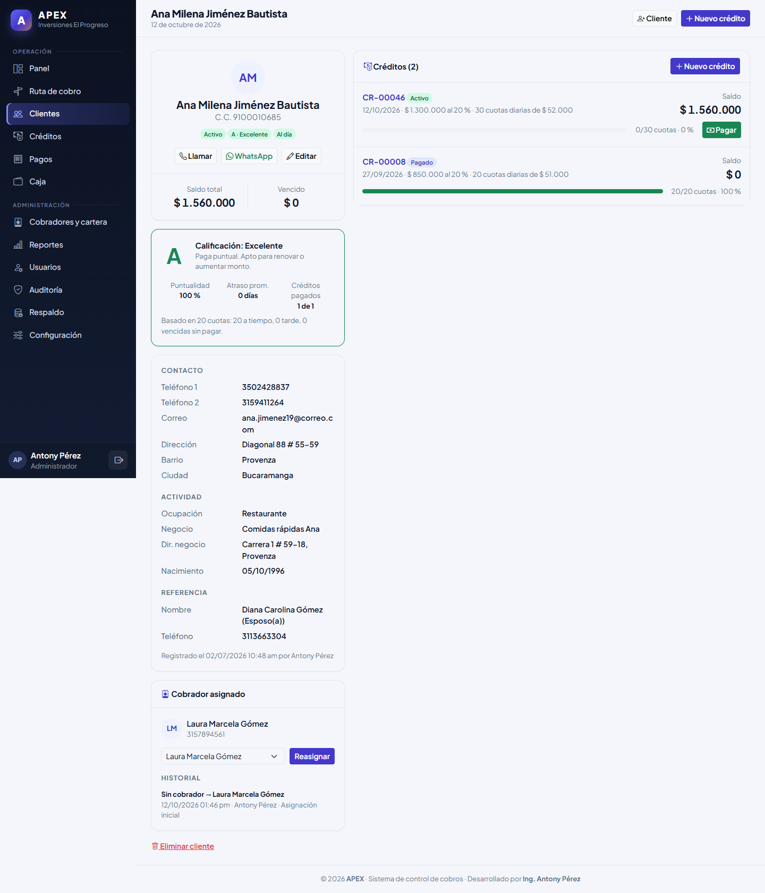
Desde la ficha puedes llamar, escribir por WhatsApp (se abre el chat con un saludo), editar, crear un nuevo crédito, registrar un pago o reasignar el cobrador.
Calificación del cliente
El sistema califica automáticamente a cada cliente según la puntualidad de todas sus cuotas (las pagadas y las vencidas) y su mora actual. Una cuota cuenta como "a tiempo" si se pagó completa hasta un día después de su vencimiento.
| Letra | Regla | Recomendación |
|---|---|---|
| A · Excelente | 90 % o más a tiempo y sin mora actual mayor a 2 días | Apto para renovar o aumentar el monto. |
| B · Bueno | 75 % o más y mora actual de hasta 7 días | Apto para renovar. |
| C · Regular | 50 % o más y mora actual de hasta 30 días | Prestar con precaución y montos bajos. |
| D · Riesgoso | El resto | No se recomienda prestar. El sistema muestra una alerta roja al crear o renovar. |
| N · Sin historial | Menos de 3 cuotas evaluadas | Cliente nuevo: evaluar con la referencia y montos pequeños. |
Asignar o reasignar clientes
Un cliente: en su ficha, sección Cobrador asignado, elige el nuevo cobrador y presiona Reasignar.
Varios a la vez: en el listado marca las casillas de los clientes (o la casilla del encabezado para todos), elige el cobrador en la barra que aparece y presiona Asignar.
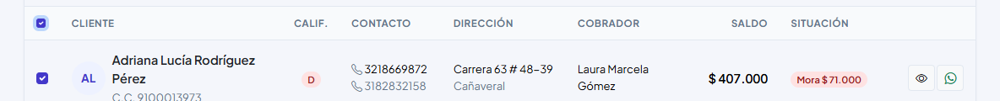
Eliminar un cliente
Solo se puede eliminar un cliente que no tenga créditos registrados. Si ya tuvo créditos, cámbialo a estado Inactivo.
Créditos
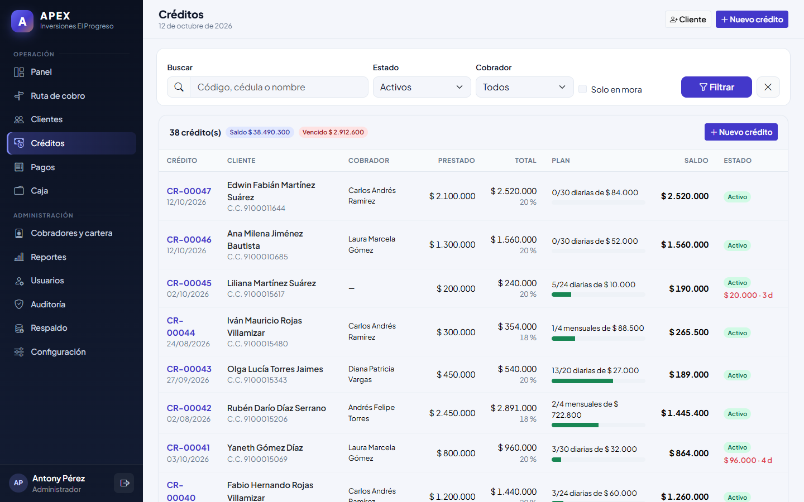
Crear un crédito
- Presiona Nuevo crédito (o desde la ficha del cliente).
- Busca y selecciona el cliente. Junto a cada nombre se muestra su calificación; si es D aparece una alerta. Los clientes bloqueados o sin cobrador no se pueden seleccionar.
- Escribe el monto a prestar y revisa el interés, la frecuencia (diaria, semanal, quincenal o mensual) y el número de cuotas.
- Indica la fecha del préstamo y la de la primera cuota (se propone automáticamente según la frecuencia).
- Para créditos diarios, deja activo No cobrar los domingos si la ruta no trabaja ese día.
- Revisa la vista previa del plan a la derecha y presiona Crear crédito.
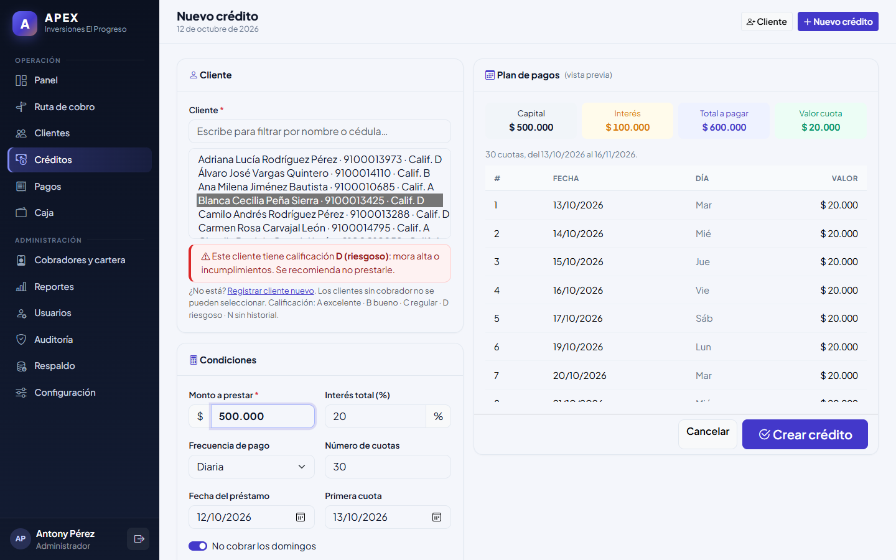
Cómo se calcula el crédito
- Diaria: una cuota por día (saltando los domingos si así se indica).
- Semanal / quincenal: cada 7 o 15 días.
- Mensual: el mismo día de cada mes; si el mes no tiene ese día, se usa el último día del mes (31 de enero → 28/29 de febrero → 31 de marzo).
Detalle del crédito
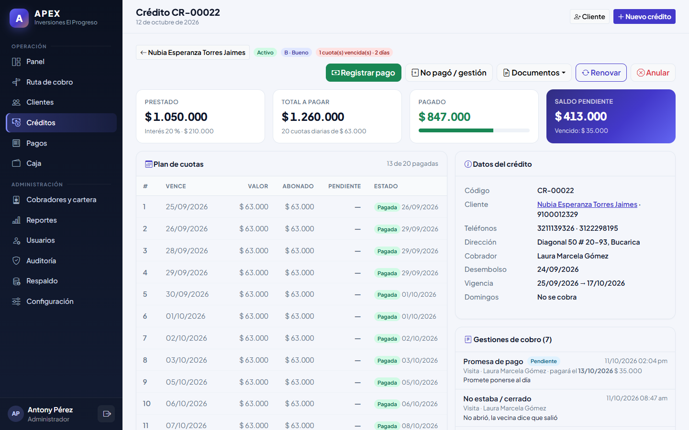
El plan de cuotas muestra cada cuota con su vencimiento, lo abonado, lo pendiente y su estado:
| Pagada | Cubierta completamente (se muestra la fecha en que se completó). |
| Parcial | Tiene un abono pero falta una parte. |
| Pendiente | Aún no vence. |
| Vencida | Su fecha ya pasó y no está pagada completa (marcada con una barra roja). La cuota del día se resalta en amarillo con la etiqueta Hoy. |
Documentos del crédito
El botón Documentos ofrece:
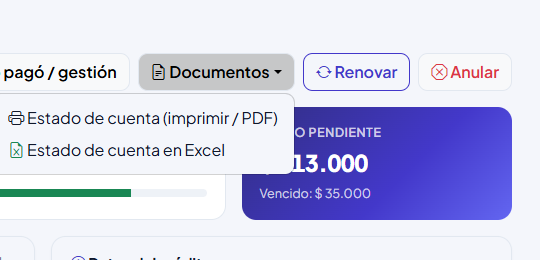
- Estado de cuenta (imprimir / PDF): documento tamaño carta con los datos del cliente, las condiciones, el plan de cuotas y los pagos. Usa Imprimir / Guardar PDF y elige "Guardar como PDF" para enviarlo.
- Estado de cuenta en Excel: libro con el plan de cuotas (incluye los días de atraso de cada cuota) y los pagos.
- Paz y salvo: certificado que solo aparece cuando el crédito está totalmente pagado.
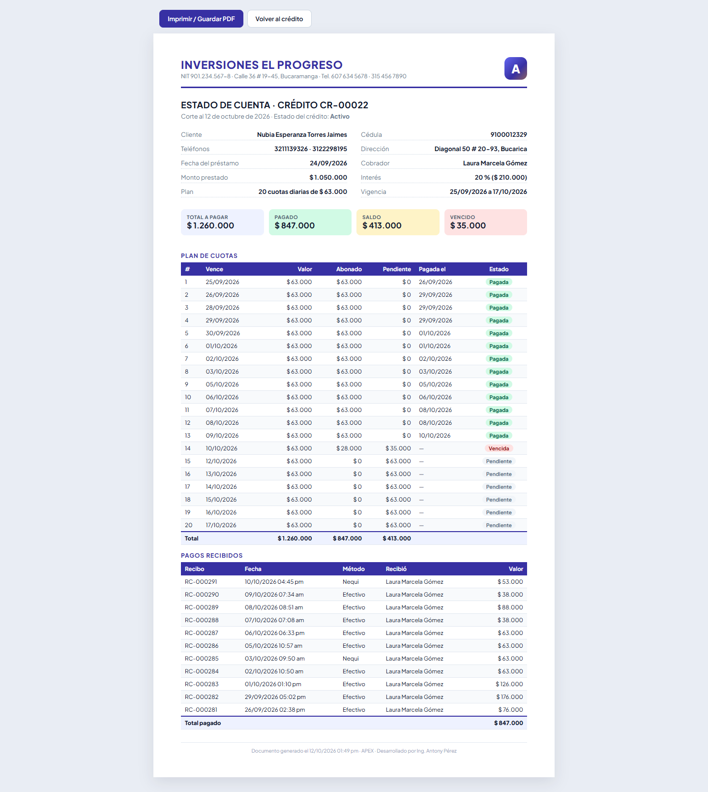
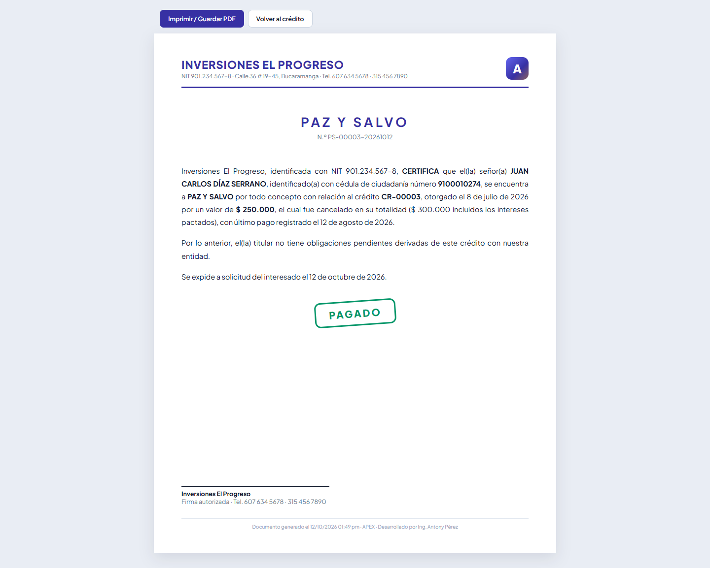
Renovar un crédito
La renovación (refinanciación) se usa cuando un cliente que todavía debe pide un préstamo nuevo. El saldo pendiente se descuenta del nuevo monto y al cliente se le entrega solo la diferencia.
- Abre el crédito activo y presiona Renovar.
- Escribe el nuevo monto y las condiciones. Debe ser mayor que el saldo pendiente.
- Verifica el efectivo a entregar que calcula el sistema y presiona Renovar crédito.
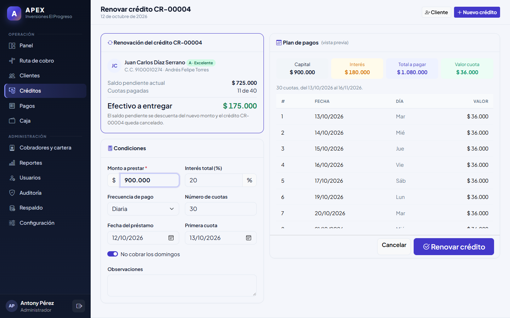
El crédito anterior queda pagado con un movimiento de tipo Renovación (no es dinero recibido: no suma al recaudo ni a la caja) y ambos créditos quedan enlazados.
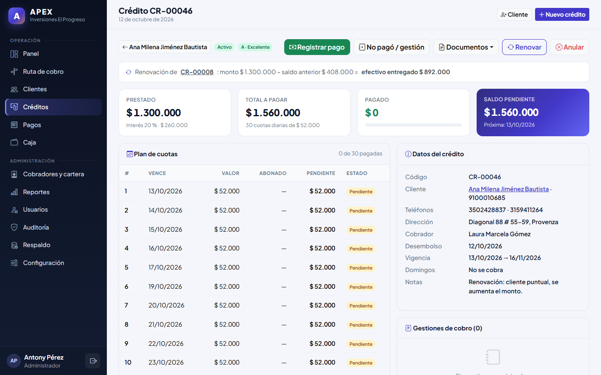
Anular un crédito
Solo para créditos registrados por error. El crédito debe estar activo y sin pagos vigentes (anula primero los pagos si los hay). Se pide el motivo y el crédito queda en el historial como anulado; no se borra.
Pagos
Registrar un pago
- Desde el crédito, la ficha del cliente o la ruta presiona Registrar pago.
- El valor sugerido es lo que el cliente debe a la fecha. Puedes cambiarlo o usar los botones rápidos ($ 10.000, $ 20.000, $ 50.000, saldo total).
- Elige el método: efectivo, Nequi, Daviplata, transferencia u otro.
- Como administrador puedes indicar la fecha (para registrar pagos de días anteriores) y quién recibió el dinero.
- Presiona Registrar pago.
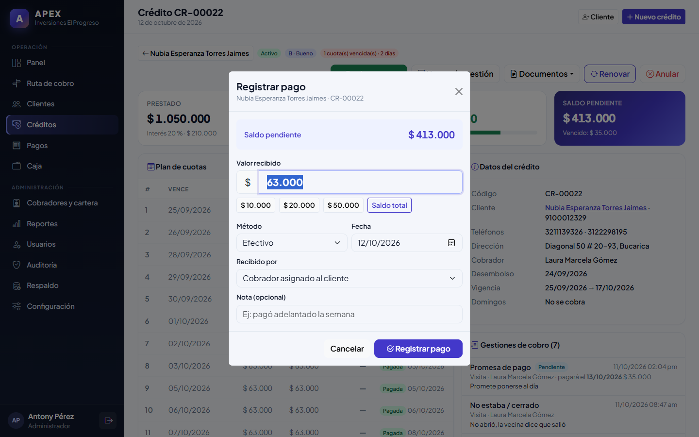
Recibo de pago
Cada pago genera un recibo numerado. Desde el listado de pagos del crédito presiona 🖨 para verlo. Se puede imprimir en impresora de 80 mm o enviar por WhatsApp al cliente.
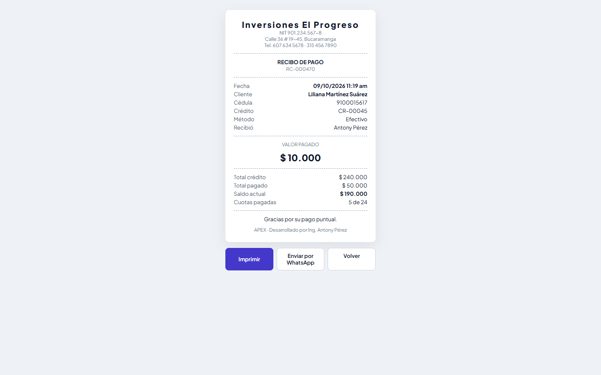
Anular un pago
Si un pago se registró por error (valor equivocado, duplicado), presiona ✕ junto al pago, escribe el motivo y confirma. El pago queda tachado como anulado y el saldo y las cuotas del crédito se recalculan automáticamente. Solo el administrador puede anular pagos.
Consultar pagos
En ves todos los pagos de un rango de fechas con el total recaudado, el número de pagos y el promedio. Filtra por cobrador, método, búsqueda libre o incluye los anulados.
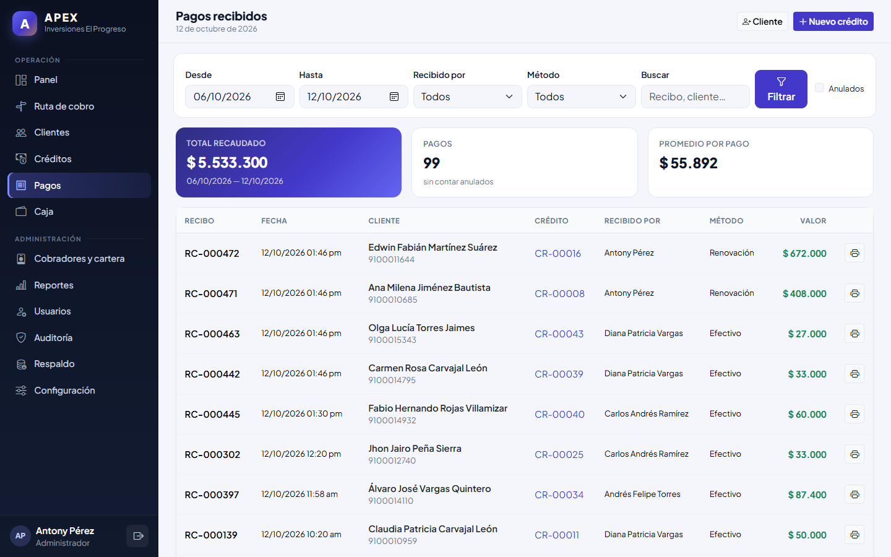
Ruta de cobro
La muestra, para la fecha elegida, los créditos que tienen cuotas por cobrar ese día o atrasadas. El cobrador la usa desde su celular; el administrador puede ver la de todos o la de un cobrador.
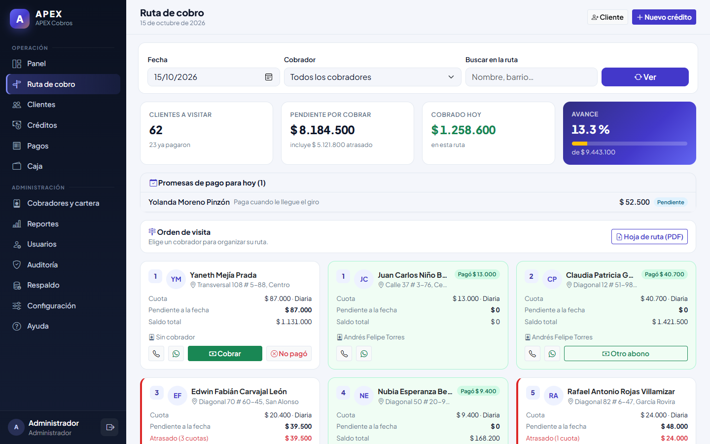
- Clientes a visitar y cuántos ya pagaron.
- Pendiente por cobrar, incluido lo atrasado.
- Cobrado hoy en esa ruta y el avance frente a la meta diaria.
- Cada tarjeta muestra la cuota, lo pendiente a la fecha, lo atrasado (borde rojo) y botones para llamar, WhatsApp, Cobrar o No pagó. Las tarjetas de quienes ya pagaron quedan en verde.
- El número de cada tarjeta es la posición del cliente en la ruta de su cobrador.
- El buscador filtra la ruta por nombre, barrio o dirección.
Orden de visita
Cada cobrador visita a sus clientes en el orden que él define, no por orden alfabético. El orden se guarda en el sistema y se conserva aunque cierre sesión, cambie de celular o pasen los días.
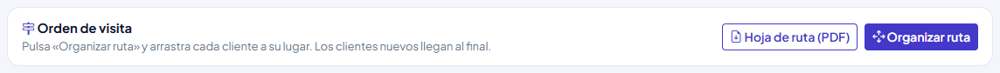
- Elige un cobrador en el filtro y presiona Ver. Con "Todos los cobradores" no se puede organizar.
- Presiona Organizar ruta. Arrastra cada tarjeta a su lugar (o usa las flechas ↑ ↓).
- Presiona Guardar orden. Aparece un aviso verde cuando queda guardado.
- Un cliente nuevo, o uno que se traslada a otro cobrador, entra al final de su ruta. Los demás no cambian de lugar.
- El cambio de orden queda en la auditoría ("Orden de ruta actualizado").
Hoja de ruta (PDF)
El botón Hoja de ruta (PDF) abre un documento con todo lo que hay que recoger ese día, en el orden de visita: totales arriba, una fila por cliente con dirección, teléfono, cuota, atrasado y saldo, y espacio para anotar a mano lo recibido. Al final trae las promesas de pago del día. Presiona Imprimir / Guardar PDF para imprimirla o guardarla.
Trabajo sin internet
APEX sigue funcionando cuando se cae la señal. El Manual del cobrador (capítulo 8) explica el uso paso a paso; aquí está lo que el administrador debe saber.
| Sin internet | Qué pasa |
|---|---|
| Consultar cualquier pantalla | Se muestra la última copia guardada en ese equipo, con una franja amarilla: "Sin conexión · copia guardada el …". Una pantalla nunca abierta con señal muestra la lista de las que sí están guardadas. |
| Cobrar, "No pagó" y ordenar desde la Ruta de cobro | Se guarda en el celular y se envía solo, en el mismo orden, cuando vuelve la señal. |
| Todo lo demás (créditos, renovaciones, anulaciones, cierres de caja, clientes, usuarios, configuración, reportes en Excel, respaldo) | No se puede. Aparece el aviso "Esta acción necesita internet" y lo escrito en el formulario no se pierde. |

Cobros que llegan después
- Nunca se registran dos veces. Cada cobro lleva un código único: si llega repetido por mala señal, se guarda una sola vez.
- Conservan la hora real del cobro, no la del envío. Excepciones: si ese día ya tiene cierre de caja, entra con la fecha del envío (para no descuadrar el cierre) y la nota dice cuándo se cobró; si pasaron más de 7 días o la hora del celular está mal, se usa la hora del servidor.
- Llevan en la nota "Registrado sin conexión" y quedan en la auditoría.
- Si el sistema rechaza uno (por ejemplo, el crédito ya fue anulado o el valor supera el saldo), queda "por revisar" en el celular del cobrador para reintentarlo o descartarlo.
Gestiones de cobro y promesas de pago
Cuando un cliente no paga, es importante dejar registrado por qué. Esto permite hacer seguimiento a la mora y medir el trabajo del cobrador.
Registrar una gestión
- En la ruta presiona ✕ No pagó, o en el crédito No pagó / gestión.
- Indica cómo se contactó: visita, llamada o WhatsApp.
- Elige el resultado: promesa de pago, no estaba / cerrado, sin dinero hoy, se niega a pagar, dirección errada / se mudó u otro.
- Si es una promesa de pago, indica la fecha (hasta 30 días) y el valor prometido.
- Agrega una observación y presiona Guardar gestión.
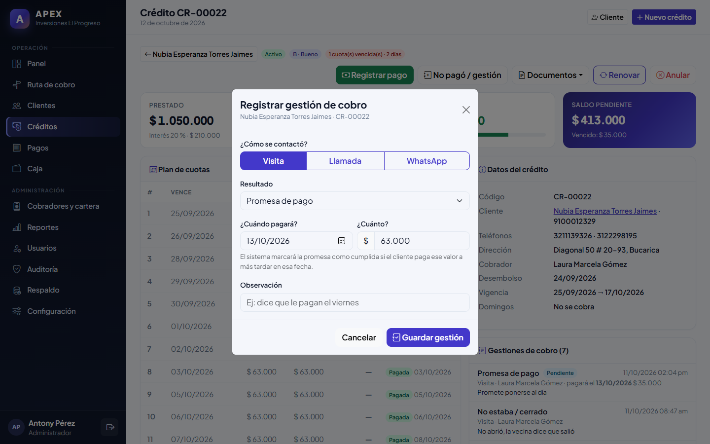
Estado de las promesas
| Pendiente | La fecha prometida aún no ha pasado. |
| Cumplida | El cliente pagó al menos el valor prometido entre el día de la gestión y la fecha prometida. Se marca sola al registrar el pago. |
| Incumplida | Pasó la fecha sin que pagara lo prometido. |
Las promesas del día aparecen en el panel y en la ruta. El historial completo está en el detalle de cada crédito, y el porcentaje de cumplimiento por cobrador en .
Caja y cierres
El módulo controla el efectivo: lo que cada cobrador recibe, lo que gasta en la ruta y lo que entrega al final del día.
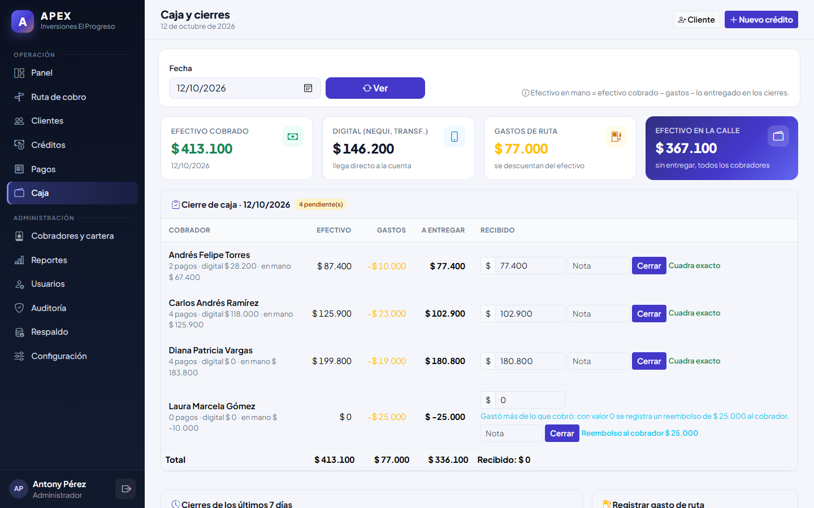
Gastos de ruta
El cobrador registra sus gastos (transporte o gasolina, alimentación, papelería, recarga u otro) desde su celular. El administrador también puede registrarlos para cualquier cobrador y fecha en el formulario Registrar gasto de ruta, y anularlos si hay un error.
Cerrar la caja de un cobrador
- Verifica que el cobrador no tenga cobros por enviar en su celular (ver capítulo 8). Si tiene, que se conecte y espere el aviso "Sincronizado".
- Recibe el dinero del cobrador y cuéntalo.
- En , en la fila del cobrador, escribe en Recibido el valor que te entregó (se propone el valor esperado).
- Mientras escribes, el sistema muestra si cuadra exacto, si hay faltante o sobrante.
- Agrega una nota si hay diferencia y presiona Cerrar.
| Cuadrado | Entregó exactamente lo esperado. |
| Faltante | Entregó menos. La diferencia queda a su cargo como efectivo en mano. |
| Sobrante | Entregó más de lo esperado. |
| Reembolso | Sus gastos superaron lo cobrado: la empresa le debe la diferencia. Se registra cerrando con valor 0. |
Debajo verás el historial de cierres de los últimos 7 días. El historial completo con faltantes y gastos está en el reporte Caja y cierres.
Cobradores y cartera
Este módulo responde a la pregunta clave del negocio: ¿cuántos clientes y cuánto dinero maneja cada cobrador?
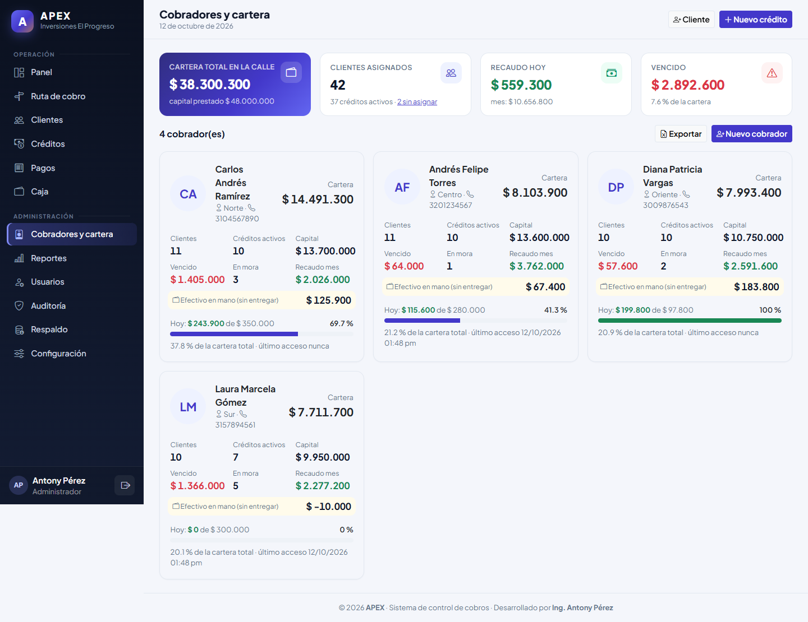
| Indicador | Significado |
|---|---|
| Cartera | Saldo pendiente de los créditos activos de los clientes que tiene asignados. |
| Clientes / créditos activos | Cantidad de clientes asignados y de créditos vigentes. |
| Capital | Suma de los montos prestados en los créditos activos. |
| Vencido / en mora | Valor de las cuotas vencidas sin pagar y cuántos créditos tienen mora. |
| Recaudo hoy / mes | Dinero recibido por ese cobrador (sin contar renovaciones). |
| Avance del día | Recaudo de hoy frente a su meta diaria. |
| Efectivo en mano | Efectivo cobrado que todavía no ha entregado en un cierre de caja. |
Cartera de un cobrador
Al abrir una tarjeta se ve el detalle: indicadores, efectivo en mano, gráfica de recaudo de 14 días, créditos en mora y la lista de sus clientes con calificación, saldo y vencido. Desde aquí puedes ver su ruta, agregarle clientes, editarlo o exportar sus clientes a Excel.
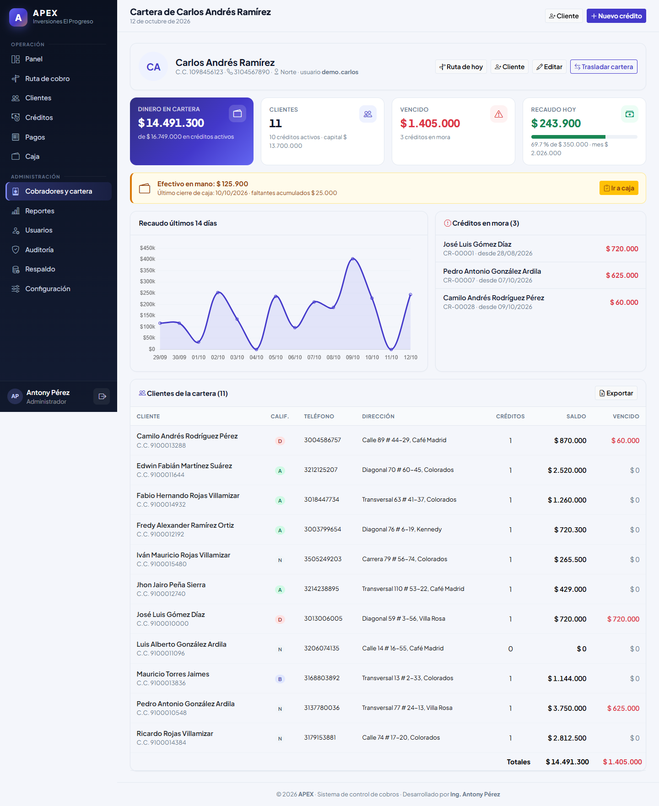
Trasladar la cartera completa
Útil para vacaciones, incapacidades o retiros. En la cartera del cobrador presiona Trasladar cartera, elige el cobrador que la recibe, escribe el motivo y confirma. Todos sus clientes pasan al nuevo cobrador y queda registrado en el historial de cada uno. Para mover solo algunos clientes usa la asignación masiva del listado de clientes.
Panel principal
Es la primera pantalla al ingresar. Resume el estado del negocio en tiempo real.
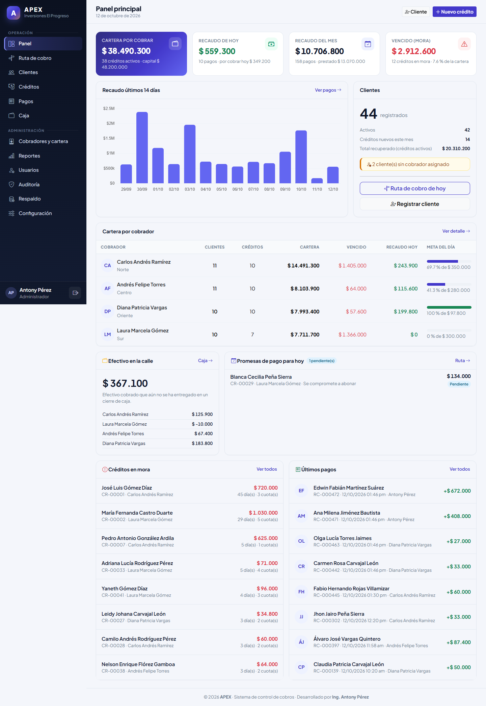
- Cartera por cobrar: saldo de todos los créditos activos y el capital prestado.
- Recaudo de hoy y del mes: dinero recibido y lo que vence hoy.
- Vencido (mora): valor vencido, créditos en mora y porcentaje de la cartera.
- Gráfica de recaudo de los últimos 14 días.
- Clientes: total, activos, créditos nuevos del mes y alerta de clientes sin cobrador.
- Efectivo en la calle por cobrador y promesas de pago para hoy.
- Cartera por cobrador con el avance de su meta del día.
- Créditos en mora (los más antiguos primero) y últimos pagos.
Reportes
En eliges el periodo (desde, hasta) y, si quieres, un cobrador. La pantalla muestra la liquidación del recaudo, la rentabilidad mensual y el cumplimiento de promesas, y permite descargar 8 reportes en Excel.
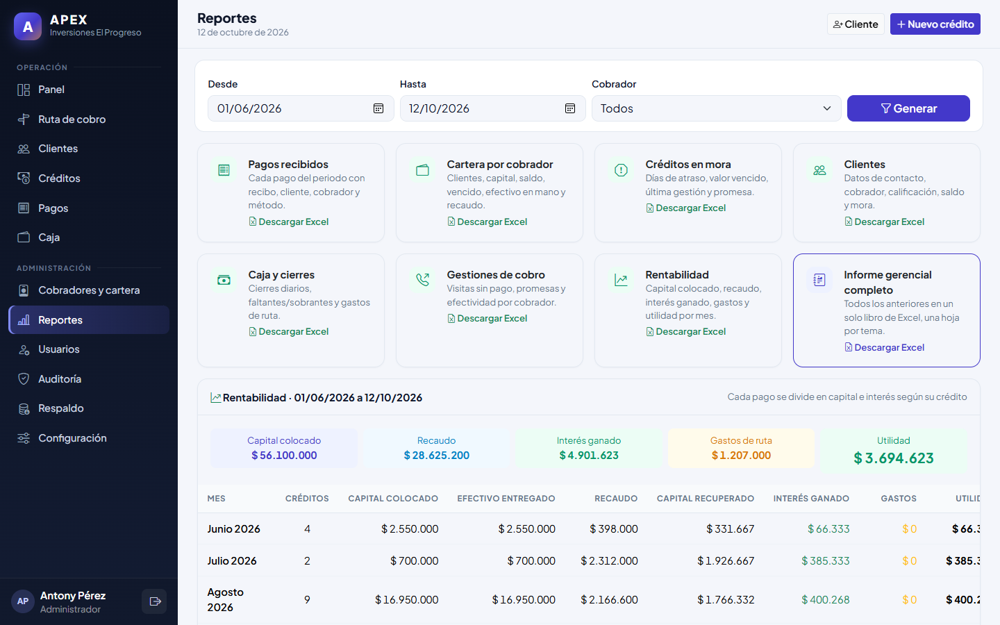
Reportes en Excel
| Reporte | Contenido |
|---|---|
| Pagos recibidos | Cada pago del periodo: recibo, fecha, crédito, cliente, quién lo recibió, método y valor. Indicadores de total, efectivo y digital. |
| Cartera por cobrador | Clientes, créditos, capital, saldo, vencido, % de mora, efectivo en mano y recaudo de hoy y del mes por cobrador. |
| Créditos en mora | Ordenados por días de atraso, con rango (1–7, 8–30, 31–60, más de 60 días), calificación, última gestión y promesa. |
| Clientes | Directorio con contacto, cobrador, calificación, puntualidad, situación, saldo y vencido. |
| Caja y cierres | Dos hojas: cierres diarios (faltantes y sobrantes) y gastos de ruta. |
| Gestiones de cobro | Efectividad de promesas por cobrador y el detalle de cada gestión. |
| Rentabilidad | Por mes: capital colocado, efectivo entregado, recaudo, capital recuperado, interés ganado, gastos, utilidad y margen. |
| Informe gerencial completo | Todos los anteriores en un solo libro con 9 hojas. |
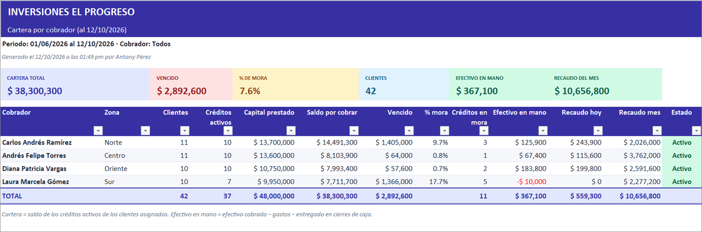
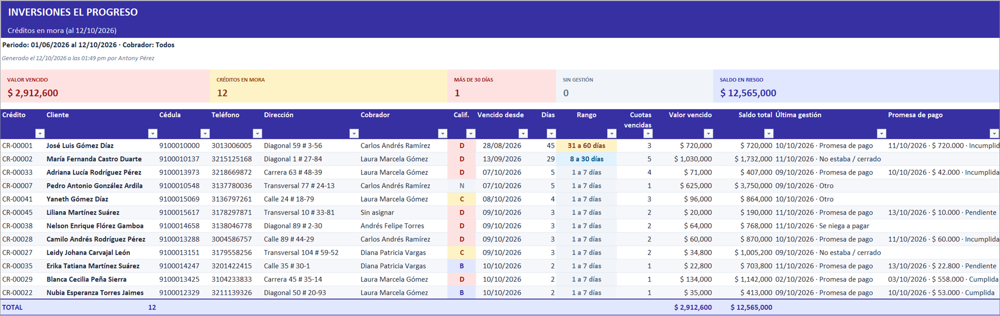
Todos los reportes traen el encabezado de la empresa, el periodo, quién lo generó, tarjetas de indicadores, totales con fórmulas (se recalculan al usar los filtros), filtros por columna, encabezado fijo y configuración de impresión horizontal.
Cómo leer la rentabilidad
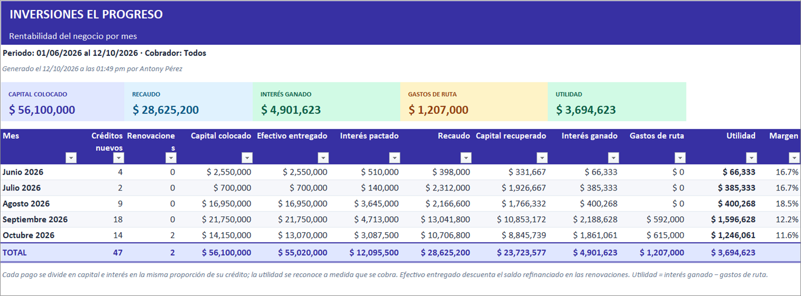
- Capital colocado: suma de los montos prestados en el mes. Efectivo entregado descuenta lo refinanciado en renovaciones.
- Recaudo: dinero recibido en el mes (sin renovaciones).
- Interés ganado: cada pago se divide en capital e interés en la misma proporción de su crédito. Ejemplo: en un crédito de $ 500.000 con total de $ 600.000, de cada $ 60.000 pagados $ 10.000 son interés.
- Utilidad = interés ganado − gastos de ruta. La ganancia se reconoce a medida que se cobra, no cuando se presta.
Auditoría
La registra quién hizo qué, cuándo y desde qué dirección IP. No se puede modificar desde el sistema.
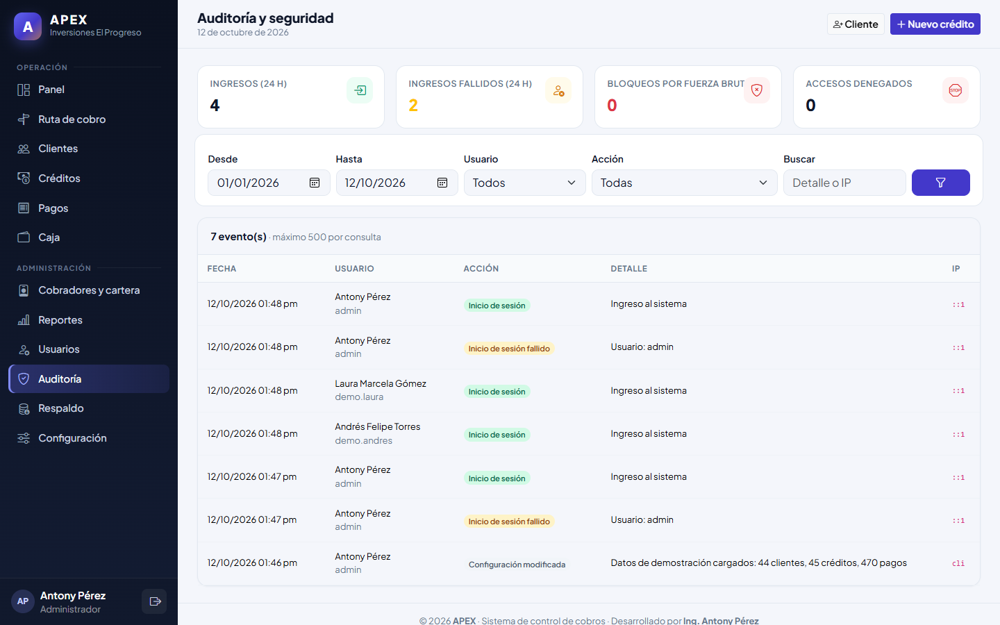
Se registran, entre otros: ingresos y salidas, intentos fallidos y bloqueos, accesos denegados, cambios de contraseña, creación y edición de usuarios y clientes, asignaciones, créditos creados, renovados y anulados, pagos registrados y anulados, gestiones, cambios del orden de la ruta, cobros y gestiones que llegaron sin conexión (marcados "sin conexión"), gastos, cierres de caja, cambios de configuración, exportaciones y respaldos. Filtra por fechas, usuario, acción o texto.
Respaldo de datos
En puedes descargar una copia completa de toda la información en un archivo .sql.
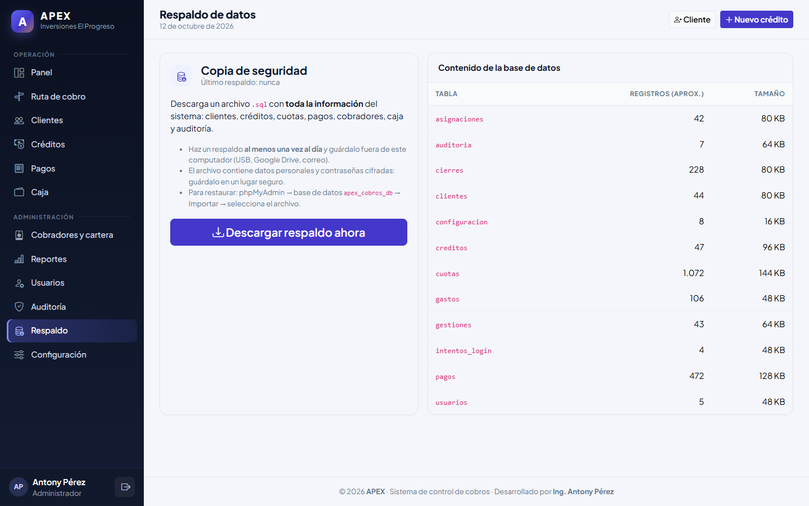
- Presiona Descargar respaldo ahora.
- Guarda el archivo fuera del computador (memoria USB, Google Drive, correo).
- Repite el proceso todos los días. El sistema también puede hacer respaldos automáticos diarios (ver el Manual de instalación).
Restaurar: en phpMyAdmin selecciona la base apex_cobros_db → Importar → elige el archivo → Continuar. Esto reemplaza la información actual por la del respaldo; hazlo solo con apoyo técnico.
Mi perfil
En (tocando tu nombre en el menú) ves tus datos, tu último acceso y la fecha de tu último cambio de contraseña, y puedes cambiar tu contraseña. Al cambiarla se cierran tus demás sesiones abiertas en otros equipos.
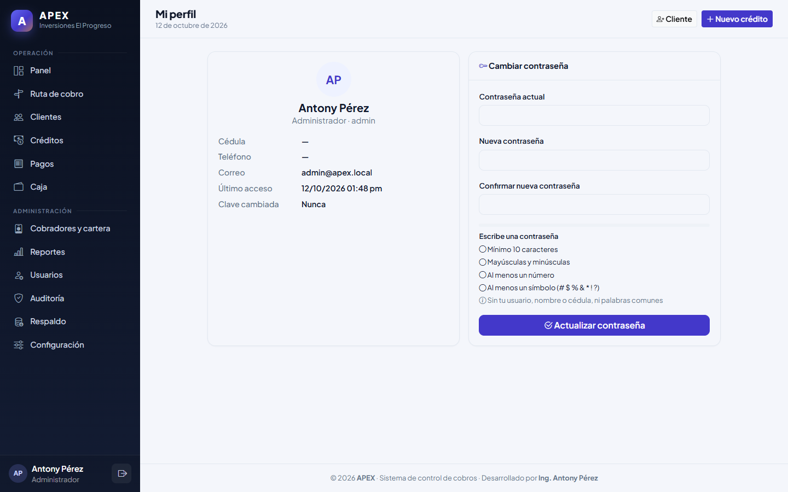
Ayuda y manuales
En puedes abrir o descargar los manuales del sistema en PDF. El administrador ve los siete manuales; el cobrador ve su manual y la guía rápida.
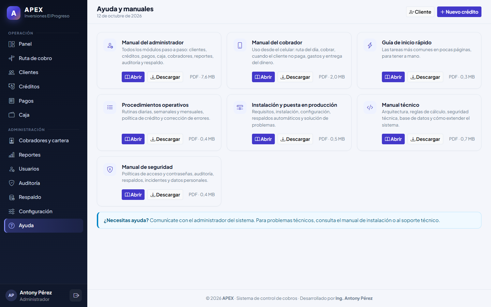
Permisos por rol
| Función | Administrador | Cobrador |
|---|---|---|
| Ver panel principal | Sí (todo) | Sí (lo suyo) |
| Ver ruta de cobro | Todas | La suya |
| Organizar el orden de la ruta | De cualquier cobrador | La suya |
| Hoja de ruta (PDF) | Sí | La suya |
| Ver y buscar clientes | Todos | Los suyos |
| Registrar clientes | Sí | Sí (quedan a su nombre) |
| Editar clientes | Sí | Los suyos (sin cambiar estado ni cobrador) |
| Asignar / trasladar clientes | Sí | No |
| Eliminar clientes | Sí | No |
| Crear, renovar y anular créditos | Sí | No |
| Registrar pagos | Sí (con fecha anterior) | De sus clientes (fecha actual) |
| Anular pagos | Sí | No |
| Registrar gestiones de cobro | Sí | De sus clientes |
| Registrar gastos de ruta | De cualquier cobrador y fecha | Los suyos, del día |
| Cerrar caja (recibir el efectivo) | Sí | No |
| Estado de cuenta, Excel y paz y salvo | Sí | De sus clientes |
| Cobradores y cartera | Todos | Su cartera |
| Reportes y Excel | Sí | No |
| Sin internet: consultar pantallas guardadas | Sí | Sí |
| Sin internet: cobrar, "No pagó" y ordenar en la ruta | Sí | Sí |
| Ayuda: manuales | Los 7 | Cobrador y guía rápida |
| Usuarios, configuración, auditoría y respaldo | Sí | No |
Preguntas frecuentes y solución de problemas
Un cobrador olvidó su contraseña
En edita al cobrador, escribe una contraseña temporal y guarda. Deberá cambiarla al ingresar.
Olvidé la contraseña del administrador
Si hay otro administrador, puede restablecerla. Si no, la persona de soporte técnico puede ejecutar en el servidor php database\restablecer_clave.php admin (ver Manual de instalación).
"Demasiados intentos fallidos"
Se escribió mal la contraseña 5 veces. Espera 15 minutos o restablece la contraseña del usuario.
"Tu sesión se cerró por inactividad"
Pasaron 30 minutos sin usar el sistema. Vuelve a ingresar; es una medida de seguridad.
No puedo crear un crédito a un cliente
Verifica que el cliente esté activo (no inactivo ni bloqueado) y que tenga un cobrador asignado.
Registré un pago con el valor equivocado
Anula el pago (✕ en el listado de pagos del crédito) indicando el motivo y regístralo de nuevo con el valor correcto.
El cobrador no ve a un cliente
El cliente está asignado a otro cobrador o a ninguno. Revisa la sección Cobrador asignado en la ficha del cliente.
No puedo eliminar un cliente o un usuario
Tiene historial (créditos, clientes o pagos). Cámbialo a Inactivo (cliente) o desactívalo (usuario).
El efectivo en mano de un cobrador es negativo
Sus gastos han superado lo cobrado y la empresa le debe esa diferencia (reembolso). Se compensa con lo que cobre después.
No puedo organizar la ruta
Elige un cobrador en el filtro de la ruta. Con "Todos los cobradores" el botón Organizar ruta no aparece.
Un cobro hecho sin internet no aparece en Pagos
Todavía está guardado en el celular del cobrador. Pídele que se conecte a internet y abra la Ruta de cobro; si su sesión venció, debe volver a ingresar con su mismo usuario. Si la barra dice "por revisar", el sistema lo rechazó: el motivo aparece en el recuadro de la ruta.
Sin internet, una pantalla dice "Sin conexión a internet"
Esa pantalla nunca se abrió con señal en ese equipo, así que no tiene copia. La página lista las pantallas que sí están guardadas.
El trabajo sin internet no funciona en los celulares
El sistema debe estar publicado con HTTPS. Con una dirección http:// los navegadores no lo permiten (salvo en el mismo servidor, localhost).
El Excel muestra los números con comas en vez de puntos
Excel usa la configuración regional de tu computador. Los valores son correctos; solo cambia cómo se muestran los separadores.
Glosario
| Abono | Pago parcial de una cuota. |
| Anulación | Invalidar un pago o crédito registrado por error. No se borra: queda en el historial con su motivo. |
| Auditoría | Registro automático de todas las acciones realizadas en el sistema. |
| Calificación | Letra A, B, C, D o N que resume el comportamiento de pago del cliente. |
| Capital | Dinero prestado, sin intereses. |
| Cartera | Saldo total pendiente por cobrar. |
| Copia guardada | Última versión de una pantalla que el equipo guardó con señal; se muestra cuando no hay internet. |
| Cierre de caja | Registro de lo que un cobrador entrega en efectivo al final del día. |
| Efectivo en mano | Efectivo que un cobrador recibió y no ha entregado. |
| Hoja de ruta | Documento PDF o impreso con los clientes y valores a cobrar en el día, en orden de visita. |
| Gestión de cobro | Registro de una visita o llamada en la que el cliente no pagó. |
| Orden de visita | Posición de cada cliente en la ruta de su cobrador, definida por él mismo. |
| Mora | Retraso en el pago de cuotas vencidas. |
| Paz y salvo | Certificado que acredita que el crédito fue pagado en su totalidad. |
| Promesa de pago | Compromiso del cliente de pagar un valor en una fecha. |
| Recaudo | Dinero efectivamente recibido. |
| Renovación | Nuevo crédito que cancela el saldo del anterior; se entrega solo la diferencia. |
| Ruta | Lista de clientes que el cobrador debe visitar en el día. |
| Sincronizar | Enviar al sistema, al volver la señal, lo que se registró en el celular sin internet. |
APEX · Sistema de control de cobros · Manual del administrador · Versión 1.3
© APEX · Desarrollado por Ing. Antony Pérez